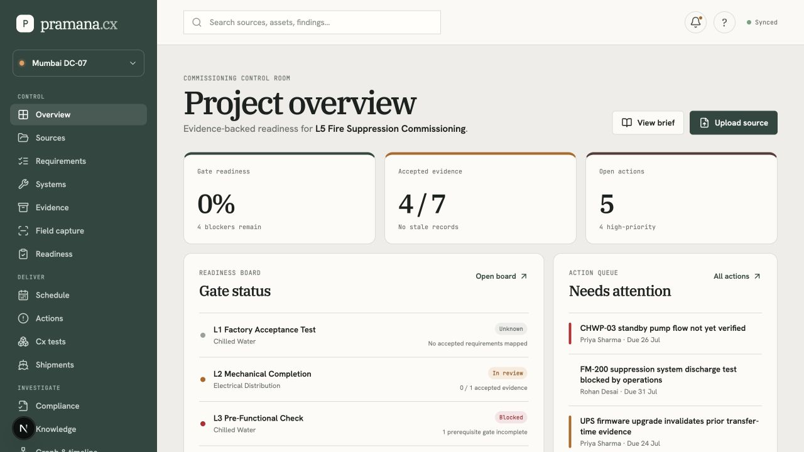
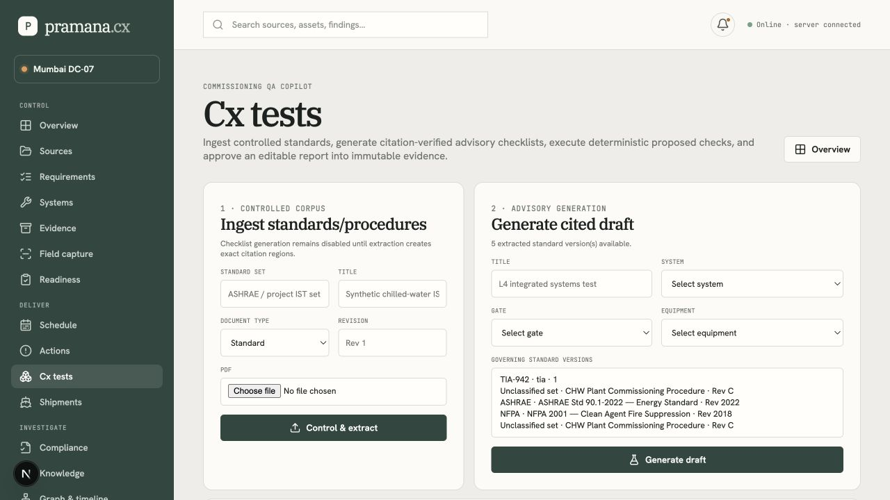
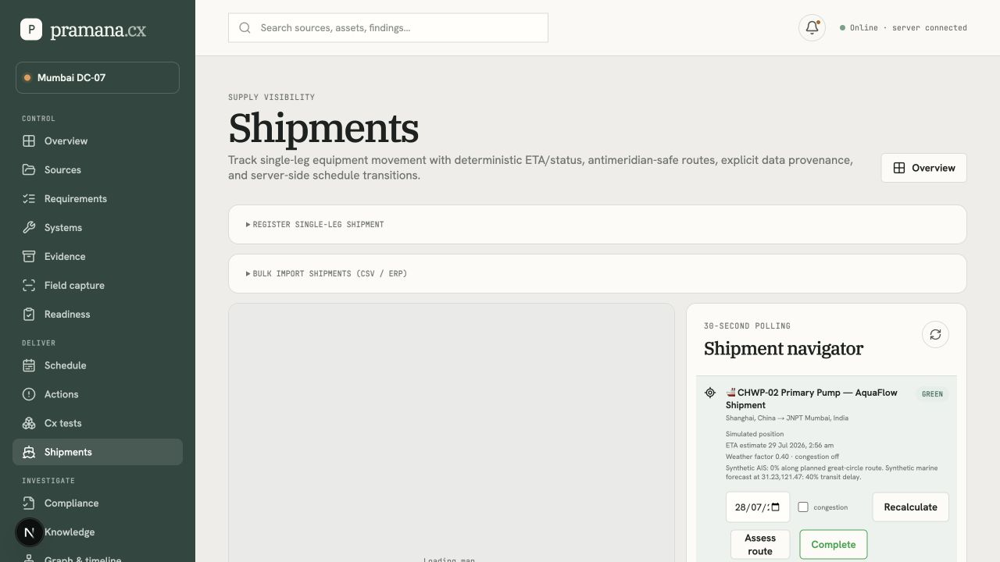
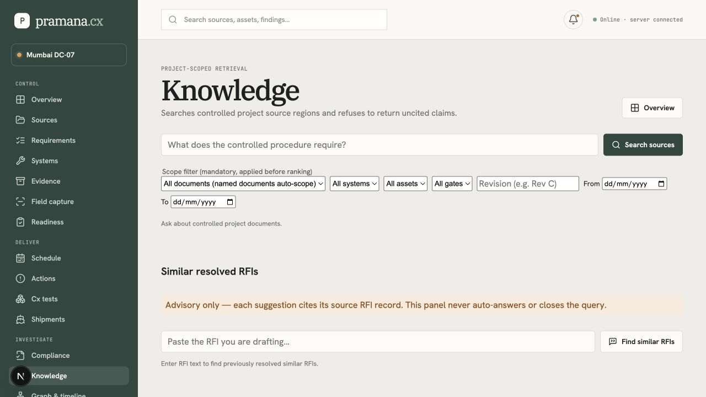

01 / Product & authority
What the system is designed to decide
Pramana Cx is a governed evidence control plane for mission-critical EPC and data-centre commissioning. It brings controlled requirements, systems, assets, gates, test evidence, findings, schedules, shipment signals, and source citations into one project-scoped graph so that an authorized engineer can determine whether a gate is defensible and what still blocks it.
Controlled project evidence
Authorized PDF, CSV, XLSX, image and structured records are stored immutably, versioned, hashed, region-extracted, and associated with project scope.
Rules over language
Readiness, numerical/boolean Cx verdicts, schedule feasibility, and materiality/deduplication rules are deterministic and auditable.
Review gates
Proposed AI output remains non-authoritative until a reviewer accepts, edits, rejects, or formally approves it.
Delivery scope and domain surfaces
- Controlled sources, revisions, source-region citations and proposal review
- Requirements, systems, assets, gates, evidence, findings and turnover packs
- Deterministic readiness and strong gate-decision authentication
- Offline field capture with idempotent synchronization
- Schedule task/resource review, CP-SAT baseline, versions, diffs and explanations
- Cx standards, checklists, readings, reports and approval
- Shipment tracking, route assessment, map visualization and delay/recovery events
- Specification / quality compliance proposal queue and approved-equal grounding
- Predictive risk, live events, advisory mitigations and Command Center alerts
- Knowledge search, RFI similarity, graph explorer and change impact
Target users and the friction removed
| User | Decision they need to make | How Pramana Cx makes it easier |
|---|---|---|
| Commissioning manager / authority | Can an L3/L4/L5 or customer gate be defended today? | One readiness view links accepted proof, failed/stale evidence, predecessor gates, blockers, ownership and source citations. |
| EPC / GC MEP package lead | What must be fixed before the next test or handover? | Task-oriented Actions, Cx, evidence and schedule surfaces expose ownership and cross-linked downstream impact instead of disconnected spreadsheets. |
| QA/QC engineer | Does the controlled record meet the accepted requirement? | Source-region viewer, deterministic numeric/boolean checks, cited comparison proposals and human disposition remove manual evidence hunting. |
| Planner / scheduler | What changed and should the baseline move? | Reviewed inputs, immutable CP-SAT versions, critical-path delta checks and solver-generated before/after explanations separate facts from speculation. |
| Owner / operations-readiness team | Is turnover complete and auditable? | Approved-gate-only manifests, canonical hashes, signed artifacts and independent verification make the evidence package inspectable. |
| Field engineer / vendor | How do I capture proof under site conditions? | Mobile/offline field capture queues evidence safely, syncs idempotently and leaves it pending until an authorized review. |
01.5 / Team, proposition & connected outcome
Three builders, one governed project story
Atharva Deo, Bhavik Sheth, and Dravvya Jain are Team Pramana: a three-member product and engineering team building decision infrastructure for mission-critical data-centre delivery. We are not presenting another document chatbot. We are connecting the work a project manager must already coordinate—site feasibility, requirements, systems, evidence, tests, compliance, logistics, economics, and turnover—into one explainable control plane.
One project truth
Documents, site inputs, assets, models, routes, evidence, tests, findings, and decisions retain project scope, revision, source, and review state.
Rules before prose
Engineering calculations, readiness rules, compliance relevance, schedule optimization, and evidence state produce inspectable facts before Gemma explains them.
Managers see the consequence
The system turns technical records into stage, blocker, owner, financial, logistics, and next-action views without pretending that AI is the approver.
The connected management loop
Core USPs
| Capability | What has been built | Why it is defensible |
|---|---|---|
| Controlled RAG | Immutable source regions, PostgreSQL full-text and pgvector candidates, stateless BGE reranking, cited synthesis, and exact document filters. | Tenant/project filtering occurs before ranking; unsupported claims without resolvable citations are removed. |
| Guided Site Analysis | Sixteen connected planning stages, evidence-aware defaults, review/finalization, deterministic rules, planning insights, and versioned snapshots. | Assumptions, confirmed values, conflicts, missing decisions, and source evidence remain visibly separate. |
| Readiness and commissioning | Accepted requirements and evidence generate project context, test procedures, blockers, stage progress, findings, and gate decisions. | Only accepted proof affects readiness; stale/failed proof and predecessor gates are calculated deterministically. |
| Local Gemma intelligence | Schema-bounded extraction, classification, summarization, vendor drafting, and manager-facing explanation through the shared provider boundary. | Model provenance is retained, requests are bounded, and every authority-bearing output remains proposed until review. |
| Economics and scenarios | USD-authoritative financial assumptions with INR display, utilization, PUE, CapEx, power cost, NPV, IRR, payback, sensitivity, and key drivers. | Formulas and canonical currency persist independently of presentation currency or AI narrative. |
| Supply and route intelligence | Site-derived procurement plans, approval before materialization, manual shipments, compact register, route geometry, weather/congestion/AIS context, and schedule events. | Live, simulated, fallback, and unavailable states are explicit; logistics cannot silently alter readiness or schedule. |
| Evidence and compliance | Field/PDF/image evidence intake, category/metadata extraction, claim-to-evidence links, exact citations, semantic candidate discovery, relevance gates, and engineer disposition. | Compliance proposals compare relevant engineering concepts only and cannot certify or self-approve. |
| Digital rack model | Site-analysis-derived rack counts and power basis, RackDB-style inventory, custom GPU/rack components, wiring relationships, saved revisions, browser rendering, and controlled exports. | Generated and custom objects are tied to the active project and revision instead of existing as an isolated visualization. |
02 / Product experience & live surfaces
Designed for operational clarity, not a generic chatbot
The workspace groups work by intent—Control, Deliver and Investigate—so people can move between the record, decision and consequence without losing project context. Contextual deep links focus the referenced gate, task, finding or shipment rather than opening an unrelated generic page. Long-running work is bounded and communicates busy/progress/error state instead of silently replacing another button action.




Presentation layer
Human labels, bounded precision, concise identifiers, meaningful empty states and raw provenance behind contextual links eliminate JSON blobs, placeholder characters and hash noise.
Cross-feature mapping
Stable IDs and deep links carry the exact operational subject across Command Center, Readiness, Schedule, Actions, Shipments and Knowledge.
Busy-state discipline
Per-operation busy state, progress feedback, disabled conflicting controls, abort deadlines and bounded retries prevent a slow model or workflow from freezing the page.
02 / System architecture
Modular monolith with isolated deterministic services
The Next.js application is the authenticated, project-scoped front door and domain authority. It owns validation, permissions, synchronous commands, and read models. Retryable or long-running work crosses a durable BullMQ/Redis boundary. PostgreSQL is the transactional source of truth; object storage holds immutable bytes; typed relational edges provide controlled graph traversal.
Service ownership and boundaries
| Component | Owns | Must not own | Interaction contract |
|---|---|---|---|
| Next.js core | Authentication, authorization, validation, domain commands, audit, project scoping | Long-running extraction/solves; direct vendor-specific AI calls | Internal APIs and durable job creation |
| Worker + BullMQ | Retryable background operations, idempotency, job state transitions | Interactive authorization or final human approval | Redis queue + Postgres durable job state |
| Ingestion service | Format extraction and regions | Business authority, readiness or user authorization | Stateless internal HTTP; structured extraction result |
| CP-SAT solver | Feasibility/optimization result or bottleneck report | Database/object storage access, schedule approval, LLM calls | Stateless internal HTTP; fully supplied solve input |
| Retrieval service | Embedding and cross-encoder reranking | Database credentials, tenant decisions, final answer authority | Stateless internal HTTP; caller-enforced scope |
03 / Core workflows
Controlled flows from source to turnover
Authority and evidence flow
Runtime request and durable-job lifecycle
- User submits a project-scoped command through the browser/PWA.
- The core authenticates, authorizes, validates the Zod contract, persists the command and idempotency state, and emits an append-only audit event.
- For work that is expensive or retryable, the core creates a stable BullMQ job identity and immediately returns a job reference.
- The worker reads immutable inputs, invokes the isolated service under timeout/retry rules, validates structured output, and persists result, provenance edges, and audit event.
- The UI polls the read model/job record and renders outcome together with authoritative/advisory state.
Schedule event to immutable version
End-to-end user and navigation flow
| Step | Primary surface | Data flow | Outcome / next route |
|---|---|---|---|
| 1. Select project | Overview / Settings | Membership-scoped project context is loaded server-side. | All navigation and queries are confined to the active project. |
| 2. Control source | Sources / Cx standards | Bytes → object storage → hash/version → source regions → durable extraction job. | Reviewer sees proposed requirements/checklist records with citations. |
| 3. Establish facility model | Systems / Requirements / Readiness | Accepted requirements and controlled entities form typed relationships. | Gate, asset and evidence context becomes traversable in Graph/Changes. |
| 4. Collect and review proof | Evidence / Field capture / Cx tests | Evidence starts pending; review writes acceptance/audit/provenance state. | Accepted proof may satisfy readiness; failed/stale proof is visible as a blocker. |
| 5. Plan and monitor delivery | Schedule / Shipments / Live events | Reviewed task/resource inputs → CP-SAT version; validated events pass delta detection. | Only material impact creates a new immutable schedule version and explanation. |
| 6. Investigate exceptions | Actions / Compliance / Knowledge / Command Center | Findings, alerts, cited answers and deep links preserve source and operational context. | Owner progresses a human-reviewed resolution without data duplication. |
| 7. Decide and turn over | Readiness / Turnover | Deterministic readiness + authorized decision + audit baseline → manifest. | Only approved gates produce verifiable turnover artifacts. |
04 / Data, provenance & graph
Transactional authority, immutable bytes, traversable relationships
Every authoritative entity is tenant and project scoped. Cross-project identifiers are rejected at the API boundary. Normalized relational tables retain business authority; the edges relation supplies governed graph traversal; immutable object storage retains original source/evidence/report/turnover bytes.
Core entity model
Provenance and integrity rules
Source-version discipline
- Immutable SHA-256 object record before extraction.
- Page-local reading-order regions retain page, bounding box, content hash and document version.
- New revisions never overwrite previous source regions.
- Superseded, rejected, failed and unauthorized sources cannot become retrieval candidates.
Business-state discipline
- Accepted-only evidence can contribute proof to readiness.
- Stale or failed evidence invalidates readiness and can reopen a gate.
- Requirement edits create an audited review event and recalculate dependent gates.
- Audit events are append-only and hash-linked per project.
Key persistence domains
| Domain | Representative records | Integrity intent |
|---|---|---|
| Identity & scope | tenants, users, projects, project_members, sessions | Project membership is evaluated server-side for every record/action. |
| Sources & knowledge | documents, document_versions, source_regions, knowledge_chunks | Immutable bytes; exact citation; embedding-model tagging prevents mixed vector spaces. |
| Evidence control | requirements, evidence, systems, assets, gates, findings, decisions, turnover packs | Human review and deterministic readiness; controlled state transitions. |
| Planning & supply | schedule_tasks, resources, schedule_versions, schedule_events, risks, shipments | Accepted inputs; immutable solve history; event deduplication and provenance. |
| Cross-cutting | edges, durable_jobs, alerts, audit_events | Typed relationship traversal, retry/idempotency and tamper-evident history. |
05 / AI, retrieval & agents
AI is bounded, cited, time-limited and non-authoritative
Provider boundary
All core generation and embedding calls resolve through a central provider boundary. Providers are explicit configuration—not accidental environment detection. Local Ollama is the intended default deployment provider: gemma4:e2b for generation and nomic-embed-text:latest for 768-dimensional embeddings. Gemini and NVIDIA NIM are supported through the same boundary. The deterministic mock provider is verification-only and must not be used in deployment.
Bounded prompt/context size and metadata-filtered retrieval.
Token caps, request deadlines, structured-output schema validation and bounded retry.
Client abort deadline, per-operation busy state, progress/status feedback and conflicting-control disablement.
Provider/model provenance, proposed review state, citation requirement, no auto-acceptance.
Controlled RAG pipeline
| Agent / capability | Implementation posture | Output / boundary |
|---|---|---|
| Commissioning QA Copilot | Governed Cx workflow: standards ingestion, cited checklist proposal, deterministic numeric/boolean readings, human-routed narrative observations, draft report review. | Approved report becomes immutable evidence. Failed deterministic tests create proposed failure/finding flow; no autonomous acceptance. |
| Supply Chain Visibility & Risk | Shipments, multi-mode routes, periodic polling, weather/congestion/AIS source handling, map and ETA assessment. | Emits explicit, deduped delayed/recovered events with live/synthetic/unavailable provenance; cannot alter schedule directly. |
| Specification & Quality Compliance | Semantic candidate discovery plus deterministic numeric, boolean and category comparison; exact-citation equality precedent handling. | Creates proposed findings only. Engineer review decides disposition/blocking state. |
| Predictive Schedule Risk | Bounded poll of procurement, lead-time, workforce and weather observations; materiality / task-risk dedupe. | Advisory risks and mitigation options; never changes dates or applies options. |
| Knowledge & RFI Intelligence | Project-scoped hybrid retrieval, graph-context expansion, cross-encoder reranking, cited answer synthesis and similar-RFI retrieval. | Only grounded, source-region-resolvable claims return; unknown/no-results state is explicit. |
06 / Interfaces & application surfaces
Authenticated APIs and task-oriented workbenches
Server-side API groups
| Group | Representative routes | Contract expectations |
|---|---|---|
| Identity & profile | /api/auth/*, /api/profile | Credential or Clerk mode, session management, TOTP enrollment/challenge, rate limits. |
| Project authority | /api/projects, /members, /activate, /alerts | Membership-scoped selection and role checks; no cross-project identifiers. |
| Evidence control | /sources, /evidence, /requirements, /gates, /turnover-packs | Versioning, review state, citations, readiness recompute and strong decision requirements. |
| Schedule & risk | /schedule/tasks, /resources, /baseline, /events, /risks | Reviewed inputs, immutable versions, event validation, bounded solver isolation. |
| Cx & compliance | /cx/*, /compliance/* | Cited source links, deterministic checks, proposed-only outputs and human review. |
| Knowledge & graph | /knowledge/query, /knowledge/rfi-similar, /graph, /edges | Deterministic scope, cited result schema and graph traversal under permission checks. |
| Shipments & objects | /shipments, /objects/[...key] | Coordinate validation, provenance notices, signed object URL boundary. |
Feature-to-feature navigation contract
Cross-links carry a stable entity identifier in the query string, for example /readiness?gate=…, /schedule?task=…, /actions?finding=…, and /shipments?shipment=…. Destination surfaces validate and consume the identifier, focus the matching record, and degrade safely if the target does not exist. This prevents generic-page navigation that loses operational context.
Control
Overview, Sources, Requirements, Systems, Evidence, Readiness, Turnover, Settings and Profile.
Deliver
Schedule, live events, Cx, field capture, shipment operations, task/resource review and reports.
Investigate
Actions, Compliance, Knowledge, Graph, Changes and Command Center.
07 / Security, safety & compliance boundaries
Security is enforced at the application boundary
Identity, authorization and approvals
- Credentials/TOTP or Clerk adapter; project membership remains the authorization source.
- Server-side permission checks and project-scoped data loading on every authority-bearing endpoint.
- Fresh TOTP plus a substantive reason for sensitive gate decisions in credentials mode.
- HttpOnly session handling, encrypted TOTP material, session revocation and rate-limit coverage.
Data protection
- Immutable objects accessed through a single local/S3-compatible boundary and signed URLs.
- Tenant/project metadata attached before a source becomes retrievable.
- Audit events form an append-only per-project hash chain.
- External public geocoding is opt-in; sensitive-site queries should use the local location catalog.
Safety controls
- AI outputs are proposals, retain provider/model provenance, and cannot auto-accept authority-bearing records.
- Grounded answers require resolvable source-region citations; unsupported claims are discarded.
- Live external signal failure is explicit; synthetic/unavailable readings must not masquerade as operational evidence.
- Readiness is derived only from accepted proof, stale/failed evidence, predecessor gates and open blockers.
- Compliance and Cx outputs are review-routed; the platform does not issue Tier, TIA, BICSI, statutory or contractual certification.
Content/licensing boundary
Only customer-authorized standards, project criteria and vendor content may be processed. Proprietary source material must not be bundled into demos, prompts, embeddings, training data or reusable templates without appropriate rights.
07.5 / Technical stack, SDKs & third-party services
Concrete technology inventory
The deployed system is a TypeScript/Node core with focused Python services for extraction, optimization and retrieval. The table records the direct runtime/tooling choices visible in the current repository; external integrations remain optional until configured with validated credentials and operational provenance.
| Layer | Technology / version | Why it is present |
|---|---|---|
| Web application | Next.js 16.2.10, React 19, TypeScript 5.7 | Server-rendered application shell, route handlers, typed UI and responsive PWA-oriented surfaces. |
| Schema / validation | Drizzle ORM 0.45, Drizzle Kit 0.31, Zod 3.24 | SQL migrations, normalized relational authority and validated server contracts. |
| Database | PostgreSQL 16 target topology; pgvector; Postgres FTS | Transactional project data, constraints, audit/job state, hybrid search and vector metadata. |
| Queue / cache | Redis, BullMQ 5.80, ioredis 5.11 | Durable retryable jobs, idempotency coordination and rate limiting. |
| Storage | Filesystem driver locally; MinIO/S3 via AWS SDK v3 | Immutable originals, source renders, report/turnover artifacts and signed reads. |
| Extraction | Python/FastAPI service, PyMuPDF | PDF/CSV/XLSX extraction into controlled source-region provenance. |
| Optimization | Python/FastAPI service, Google OR-Tools CP-SAT | Stateless feasibility/optimization behind a timeout/retryable internal HTTP boundary. |
| Retrieval | Python/FastAPI service; BAAI/bge-base-en-v1.5 and bge-reranker-base | 768-dimensional embeddings and cross-encoder reranking without database credentials. |
| AI providers | Ollama gemma4:e2b, nomic-embed-text:latest; optional Gemini and NVIDIA NIM | Explicit provider abstraction for structured, bounded advisory work. Mock is test-only. |
| Maps / logistics | Leaflet 1.9, React Leaflet 5 RC, Turf, searoute-js, OpenStreetMap | Route visualization, great-circle/sea geometry, coordinate handling and visible provenance. |
| Security / identity | bcryptjs, OTPAuth, optional Clerk Next.js SDK | Owned credentials/TOTP or hosted identity adapter with application-owned RBAC. |
| Visual system | IBM Plex Serif, Hanken Grotesk, JetBrains Mono, Lucide, Three.js 0.185 | Consistent application typography, iconography and interactive 404 visual experience. |
SDKs, APIs and third-party service rules
Required internal dependencies
- PostgreSQL with
vectorextension - Redis
- Object storage driver (local or S3-compatible)
- Ingestion, solver and optional retrieval services
- Web and worker processes with matching secret/config state
Optional external integrations
- Ollama/Gemini/NIM model endpoint
- Clerk identity provider, if selected
- AIS, weather, procurement, lead-time/workforce and congestion providers
- OpenStreetMap/Nominatim only with explicit user opt-in for public geocoding
- S3-compatible cloud object storage for production artifacts
08 / Runtime, deployment & operations
Local topology today; explicit production gates tomorrow
Runtime topology
| Process / service | Purpose | Expected endpoint / command |
|---|---|---|
| Web application | Next.js UI and route handlers | http://localhost:4173; npm run dev or npm run start |
| Worker | Durable BullMQ background jobs | npm run worker |
| PostgreSQL + pgvector | Transactional authority, vectors, FTS and job/audit state | Migration via npm run db:migrate |
| Redis | BullMQ queue and rate-limit support | Internal local/Compose service |
| Ingestion / Solver / Retrieval | Extraction, deterministic optimization, embeddings/reranking | Ports 8001 / 8002 / 8003 |
| Object storage | Originals, exports, manifests and artifacts | Filesystem locally or S3-compatible MinIO |
Local start and verification
npm install cp .env.example .env.local npm run db:migrate npm run db:seed npm run system:start # release-oriented checks npm run typecheck npm run build npm run verify:all # real local provider smoke test (requires reachable Ollama) ollama pull gemma4:e2b ollama pull nomic-embed-text:latest MODEL_PROVIDER=ollama EMBEDDING_PROVIDER=ollama npm run verify:ollama
Configuration principles
AUTH_MODEmust becredentialsorclerkin production—notdevelopment.MODEL_PROVIDERandEMBEDDING_PROVIDERmust select a real, reachable provider in deployment—notmock.- Containerized services must reach a network-addressable model endpoint; host loopback is not available from a container by default.
INFRA_ALLOW_DEGRADED=falseis required for production operation.
Technical prerequisites and environment configuration
| Requirement | Local expectation | Production expectation |
|---|---|---|
| Runtime | Recent Node.js 22, npm, Python 3, Docker Desktop for Compose topology | Pinned container/runtime images, separate web/worker processes and a supported Python service runtime. |
| Database | PostgreSQL reachable locally; migrations applied; pgvector where retrieval is enabled | Managed or hardened PostgreSQL with TLS, backup/restore rehearsal, role separation and migration-from-empty proof. |
| Secrets | .env.local copied from .env.example; never committed | Secret manager / encrypted environment injection; rotation plan and no secrets in artifacts/logs. |
| Object storage | Filesystem or local MinIO | Private S3-compatible bucket, encryption, lifecycle/retention and signed-URL policy. |
| Models | Optional Ollama installed locally for real smoke tests | Network-reachable model service for both web and worker; data-processing approval and provider-specific monitoring. |
| Environment group | Representative keys | Safety requirement |
|---|---|---|
| Application / auth | APP_BASE_URL, AUTH_MODE, AUTH_ENCRYPTION_KEY, Clerk keys | Production URL/cookies set correctly; development mode prohibited in release. |
| AI / retrieval | MODEL_PROVIDER, EMBEDDING_PROVIDER, OLLAMA_BASE_URL, OLLAMA_MODEL, OLLAMA_EMBEDDING_MODEL, GEMINI_API_KEY, NIM_API_KEY | Never use mock in deployment; endpoint reachable from all callers; timeout/token settings remain bounded. |
| Infrastructure | Database URL, Redis URL, object storage driver/endpoint/bucket/access keys, INFRA_ALLOW_DEGRADED | Health checks must be green; use non-degraded configuration and least-privilege credentials. |
| Operational signals | Procurement, lead-time, workforce, weather, AIS/congestion service URLs/credentials | Explicit live/synthetic/unavailable state; no simulated source may be represented as live. |
09 / Verification & quality evidence
Release confidence comes from a matrix, not a green build
The repository exposes focused verification scripts plus verify:all, which applies migrations, builds the artifact, starts isolated runtimes, validates credentials and domain contracts, and removes synthetic records where safe. Deterministic mock providers are used only to validate repeatable application contracts; a real-provider smoke test remains separate.
| Verification area | Examples of coverage | Expected evidence |
|---|---|---|
| Build and migration | TypeScript, Next production build, Drizzle integrity and migration replay | Compile/build success and valid schema state |
| Security & tenancy | Credentials/TOTP, rate-limit coverage, cross-project rejection, audit chain | Server-side enforcement and append-only audit integrity |
| Evidence to turnover | Pending/accepted evidence, readiness, gate decision, manifest verification | Accepted-only proof and independently verifiable export |
| Schedule & recovery | Inputs, dependencies, CP-SAT feasibility, immutable versions, delta-triggered re-solve | No solver call on irrelevant event; explicit solve failure/degradation |
| Cx & compliance | Citations, deterministic reading, cross-scope rejection, proposed finding review | No unauthorized acceptance or ungrounded compliance decision |
| Knowledge | Embedding model tagging, filter enforcement, reranking, synthesis groundedness, RFI similarity | Cited project-scoped answer or explicit no-results state |
| Shipments, risk & links | Route provenance, polling/dedupe, deep links, live-provider fail-closed behavior | No misleading live status; focused cross-feature navigation |
| Browser acceptance | Sidebar traversal, UI status/timeout behaviour, duplicate-key and console-error checks | No error boundary, duplicate-key warning or document-level overflow |
Cross-branch and application mitigation ledger
This is the condensed technical history across the Refinement and Updated-Refinement applications, their integrated domain agents, and browser/PDF acceptance—not just a single development session. The detailed twenty-item record remains in the repository README.
| Failure class found | Observed consequence | Mitigation now built |
|---|---|---|
| Hardcoded/mock model behaviour | Deterministic TypeScript demo output could be mistaken for a real LLM. | Explicit provider/embedding configuration, local Ollama default, production mock rejection and provider provenance. |
| Provider bypass and inconsistent Gemini paths | Generation, vision and embeddings could ignore chosen provider, deadline or safety policy. | Central schema-validated boundary; explicit provider resolution; real-provider smoke tests; no side-by-side AI implementations. |
| Unbounded long-running requests | Buttons appeared stuck and a slow generation could degrade the frontend. | Server deadline, prompt/context/output caps, client abort, busy state, progress and bounded retries. |
| Broken deep-link consumption | Command Center links opened generic feature pages, losing the selected record. | Query-ID validation/focus contracts for readiness, schedule, actions and shipments; regression suite. |
| Duplicate React keys and duplicate business records | Console warnings, duplicated/omitted cards and corrupted aggregate mapping. | Stable composite keys, business-key constraints, seed reconciliation and relational integrity verification. |
| Migration collision | Incompatible 0010/0011 branch sequences and a 19-conflict dry-run merge. | Final-schema-first reconciliation, ordered migrations, snapshot/journal review and migration replay validation. |
| RAG indexing / attribution gaps | Processed source absent from semantic search, or an explicitly named standard returned unrelated citations. | Extraction-to-indexing contract, backfill, document SQL filter before ranking, title routing and citation chips. |
| Unsafe map/routing semantics | Base map/no route, direct HTTP routing, or a fallback presented as verified logistics. | Coordinate validation, route/marker fit, HTTPS/deadline checks, mode-aware provenance and explicit fallback notice. |
| Operational UI leakage | Raw JSON, hashes, repeated placeholder characters, excess precision and contradictory synthetic/live cues. | Central presentation helpers, human labels, bounded formatting and live/synthetic/unavailable state at every signal. |
| Documentation / release traceability | Architecture details could regress or disappear during branch consolidation. | Visible README diagrams, this print-ready dossier, release ledger, planning-document precedence and independent documentation commits. |
Future CI/CD pipeline
- Pull request: typecheck, formatting, dependency audit, secret scan and migration/schema validation.
- Integration: isolated PostgreSQL/Redis/object-storage services; API contract, data-integrity, authorization, source-to-turnover, schedule, Cx, compliance, RAG, deep-link and failure-injection tests.
- Browser/accessibility: Playwright sidebar journeys, responsive/mobile routes, console error capture, axe/keyboard/contrast checks and visual regression snapshots.
- Release: signed build/image, SBOM/container scan, staging migration rehearsal, deployment health checks, real-provider acceptance, smoke test, manual approval, observable rollback.
10 / Production release gate
Deployment is a controlled decision, not an environment-variable switch
- Secrets and identity: configure secret-managed
AUTH_ENCRYPTION_KEY, cookie/base URL settings and Clerk credentials if selected. Confirm production authentication mode. - AI providers: configure a reachable Ollama, Gemini or NIM endpoint for both web and worker; prove deadline, structured-output and embedding behaviour against release settings.
- Data plane: confirm PostgreSQL
vectorextension, migrations-from-empty, Redis, object storage, retention, and tested backup/restore. - Internal services: prove health checks for ingestion, solver, retrieval and worker; use TLS/internal network restrictions and non-degraded infrastructure mode.
- Live signals: validate AIS/weather/congestion/procurement provenance and failure behaviour; disable or visibly label synthetic paths outside test/demo use.
- Quality and operations: run release checks, accessibility and load tests; establish CI, metrics, traces, queue dashboards, alerting, incident ownership and runbooks.
Source documents for ongoing maintenance
| Document | Role |
|---|---|
README.md | Current implementation map, diagrams, release audit and configuration guidance. |
STATUS.md | Authoritative shipped/open ledger and latest verification context. |
PLANNER/PRD.md | Product intent, user stories, acceptance criteria and explicit scope. |
PLANNER/TRD.md | Technical requirements, historical architecture decisions and service contracts. |
PLANNER/Schema.md | Data schema and entity relationship reference. |
PLANNER/AppFlow.md | Primary user flows, edge cases and navigation map. |
PLANNER/DesignDecisions.md | Architecture decision records and rejected alternatives. |
PLANNER/RetrievalArchitecture.md | Controlled retrieval contract, scale path and non-negotiable safeguards. |